pacman::p_load(tmap, spdep, funModeling, rgdal, spdep, tmap,
sf, ClustGeo, ggpubr, cluster, factoextra, NbClust,
heatmaply, corrplot, psych, tidyverse, GGally)Regionalisation of Multivariate Water Point Attributes with Non-spatially Constrained and Spatially Constrained Clustering Methods
Take-home Ex2
Overview
Introduction
The process of creating regions is called regionalisation. A regionalisation is a special kind of clustering where the objective is to group observations which are similar in their statistical attributes, but also in their spatial location. In this sense, regionalization embeds the same logic as standard clustering techniques, but also applies a series of geographical constraints. Often, these constraints relate to connectivity: two candidates can only be grouped together in the same region if there exists a path from one member to another member that never leaves the region. These paths often model the spatial relationships in the data, such as contiguity or proximity. However, connectivity does not always need to hold for all regions, and in certain contexts it makes sense to relax connectivity or to impose different types of geographic constraints.
Objectives
In this take-home exercise you are required to regionalise Nigeria by using, but not limited to the following measures:
Total number of functional water points
Total number of nonfunctional water points
Percentage of functional water points
Percentage of non-functional water points
Percentage of main water point technology (i.e. Hand Pump)
Percentage of usage capacity (i.e. < 1000, >=1000)
Percentage of rural water points
The Data
Apstial data
For the purpose of this assignment, data from WPdx Global Data Repositories will be used. There are two versions of the data. They are: WPdx-Basic and WPdx+. You are required to use WPdx+ data set.
Geospatial data
Nigeria Level-2 Administrative Boundary (also known as Local Government Area) polygon features GIS data will be used in this take-home exercise. The data can be downloaded either from The Humanitarian Data Exchange portal or geoBoundaries.
R Package Installation
Before we get started, it is important for us to install the necessary R packages into R and launch these R packages into R environment.
The R packages needed for this exercise are as follows:
Spatial data handling
- sf, rgdal and spdep
Attribute data handling
- tidyverse, especially readr, ggplot2 and dplyr
Choropleth mapping
- tmap
Multivariate data visualisation and analysis
- coorplot, ggpubr, and heatmaply
Cluster analysis
cluster
ClustGeo
The code chunks below installs and launches these R packages into R environment.
Importing Geospatial Data from Filtered .rds Data
In the previous Data Preparation file, we have prepared and filtered data into .rds format, the following exercise will be based on the filtered data.
Reading the Spatial Distribution of Water Points
First, we are going to import the two water point geospatial data (i.e. nga_wp and nga_final) with one contains more informational and other more simplified data by using the code chunk below.
nga_wp <- read_rds("data/nigeria_final.rds")
nga <- read_rds("data/nigeria_wp.rds")Data Wrangling
Working with Projection
Map projection is an important property of a geospatial data. In order to perform geoprocessing using two geospatial data, we need to ensure that both geospatial data are projected using similar coordinate system. The technical term of this process is called projection transformation.
Extracting Water Point Data
The code chunk below is used to display the status column of the data
freq(data=nga_wp,
input = 'status')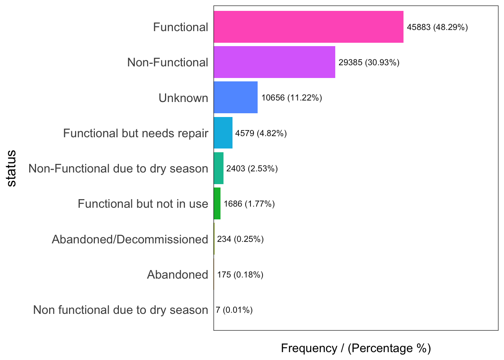
status frequency percentage cumulative_perc
1 Functional 45883 48.29 48.29
2 Non-Functional 29385 30.93 79.22
3 Unknown 10656 11.22 90.44
4 Functional but needs repair 4579 4.82 95.26
5 Non-Functional due to dry season 2403 2.53 97.79
6 Functional but not in use 1686 1.77 99.56
7 Abandoned/Decommissioned 234 0.25 99.81
8 Abandoned 175 0.18 99.99
9 Non functional due to dry season 7 0.01 100.00We are going to extract water point records by using status column.
The code chunk below is used to extract functional water points.
wpt_functional <- nga_wp %>%
filter(`status` %in%
c("Functional",
"Functional but not in use",
"Functional but needs repair"))The code chunk below is used to extract non-functional water points.
wpt_nonfunctional <- nga_wp %>%
filter(`status` %in%
c("Abandoned/Decommissioned",
"Abandoned",
"Non-Functional",
"Non functional due to dry season",
"Non-Functional due to dry season"))The code chunk below is used to extract unknown water points.
wpt_unknown <- nga_wp %>%
filter(`status` == "Unknown")Extracting Water Point Data by main technology
The code chunk below is used to display the distribution of technology adopted by water points.
freq(data=nga_wp,
input = 'water_tech')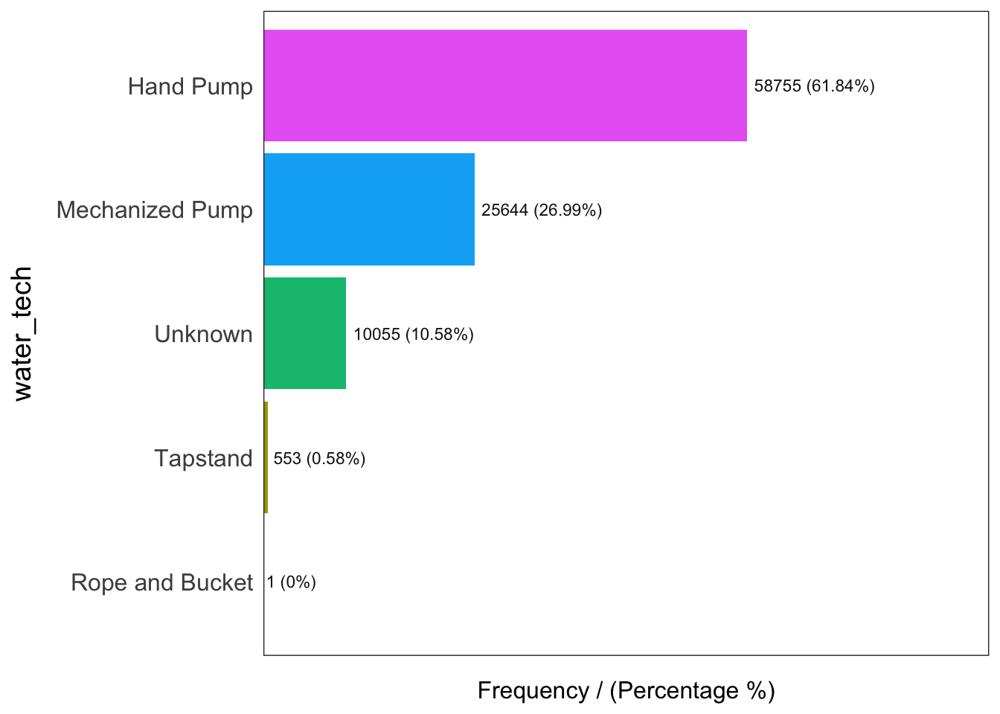
water_tech frequency percentage cumulative_perc
1 Hand Pump 58755 61.84 61.84
2 Mechanized Pump 25644 26.99 88.83
3 Unknown 10055 10.58 99.41
4 Tapstand 553 0.58 99.99
5 Rope and Bucket 1 0.00 100.00We are going to categorize the technology into three types: Hand Pump, Mechanized Pump and Unknown(includes NA values, Tapstand, Rope and Bucket).
The code chunk below is used to extract water points by category.
wpt_handpp <- nga_wp %>%
filter(`water_tech` %in%
c("Hand Pump"))
wpt_mechanizedpp <- nga_wp %>%
filter(`water_tech` %in%
c("Mechanized Pump"))Extracting Water Point Data by usage capacity
freq(data=nga_wp,
input = 'usage_capacity')
usage_capacity frequency percentage cumulative_perc
1 300 68789 72.40 72.40
2 1000 25644 26.99 99.39
3 250 573 0.60 99.99
4 50 2 0.00 100.00The code chunk below is used to split usage_capacity into two categories (<1000 and >=1000).
wpt_usage_cap_below_1k <- nga_wp %>%
filter(`usage_capacity` %in%
c("50","250","300"))
wpt_usage_cap_above_1k <- nga_wp %>%
filter(`usage_capacity` %in%
c("1000"))Extracting Rural Water Point Data
freq(data=nga_wp,
input = 'is_urban')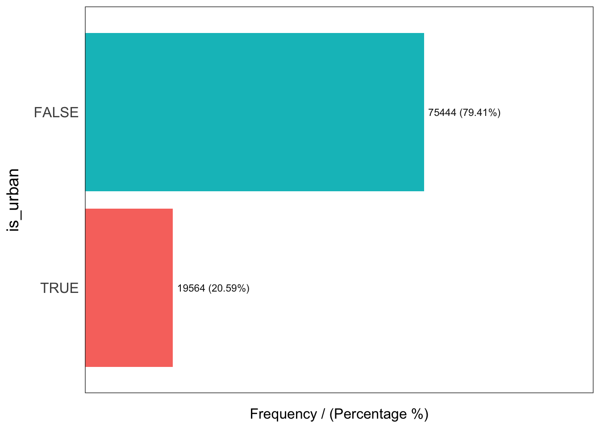
is_urban frequency percentage cumulative_perc
1 FALSE 75444 79.41 79.41
2 TRUE 19564 20.59 100.00wpt_rural <- nga_wp %>%
filter(`is_urban` %in%
c("FALSE"))Assigning EPSG code to a simple feature data frame
One of the common issue that can happen during importing geospatial data into R is that the coordinate system of the source data was either missing (such as due to missing .proj for ESRI shapefile) or wrongly assigned during the importing process.
The simplified water point data of nga will be run through st_crs() of sf package as shown in the code chunk below.
st_crs(nga)Coordinate Reference System:
User input: EPSG:4326
wkt:
GEOGCRS["WGS 84",
ENSEMBLE["World Geodetic System 1984 ensemble",
MEMBER["World Geodetic System 1984 (Transit)"],
MEMBER["World Geodetic System 1984 (G730)"],
MEMBER["World Geodetic System 1984 (G873)"],
MEMBER["World Geodetic System 1984 (G1150)"],
MEMBER["World Geodetic System 1984 (G1674)"],
MEMBER["World Geodetic System 1984 (G1762)"],
MEMBER["World Geodetic System 1984 (G2139)"],
ELLIPSOID["WGS 84",6378137,298.257223563,
LENGTHUNIT["metre",1]],
ENSEMBLEACCURACY[2.0]],
PRIMEM["Greenwich",0,
ANGLEUNIT["degree",0.0174532925199433]],
CS[ellipsoidal,2],
AXIS["geodetic latitude (Lat)",north,
ORDER[1],
ANGLEUNIT["degree",0.0174532925199433]],
AXIS["geodetic longitude (Lon)",east,
ORDER[2],
ANGLEUNIT["degree",0.0174532925199433]],
USAGE[
SCOPE["Horizontal component of 3D system."],
AREA["World."],
BBOX[-90,-180,90,180]],
ID["EPSG",4326]]This code indicates that the EPSG is 4326. This is a wrong EPSG code because the correct EPSG code for the task should be a choice between 26391, 26392, and 26303. Therefore, transformation of EPSG is needed, st_set_crs() of sf package is used as shown in the code chunk below.
NIGERIA <- st_transform(nga, 26391)
NIGERIA <- na.omit(NIGERIA)Now, let us check the CSR again by using the code chunk below.
st_crs(NIGERIA)Coordinate Reference System:
User input: EPSG:26391
wkt:
PROJCRS["Minna / Nigeria West Belt",
BASEGEOGCRS["Minna",
DATUM["Minna",
ELLIPSOID["Clarke 1880 (RGS)",6378249.145,293.465,
LENGTHUNIT["metre",1]]],
PRIMEM["Greenwich",0,
ANGLEUNIT["degree",0.0174532925199433]],
ID["EPSG",4263]],
CONVERSION["Nigeria West Belt",
METHOD["Transverse Mercator",
ID["EPSG",9807]],
PARAMETER["Latitude of natural origin",4,
ANGLEUNIT["degree",0.0174532925199433],
ID["EPSG",8801]],
PARAMETER["Longitude of natural origin",4.5,
ANGLEUNIT["degree",0.0174532925199433],
ID["EPSG",8802]],
PARAMETER["Scale factor at natural origin",0.99975,
SCALEUNIT["unity",1],
ID["EPSG",8805]],
PARAMETER["False easting",230738.26,
LENGTHUNIT["metre",1],
ID["EPSG",8806]],
PARAMETER["False northing",0,
LENGTHUNIT["metre",1],
ID["EPSG",8807]]],
CS[Cartesian,2],
AXIS["(E)",east,
ORDER[1],
LENGTHUNIT["metre",1]],
AXIS["(N)",north,
ORDER[2],
LENGTHUNIT["metre",1]],
USAGE[
SCOPE["Engineering survey, topographic mapping."],
AREA["Nigeria - onshore west of 6°30'E, onshore and offshore shelf."],
BBOX[3.57,2.69,13.9,6.5]],
ID["EPSG",26391]]Notice that the EPSG code is 26391 now.
The summary of the filtered data is shown below:
summary(NIGERIA) ADM2_EN ADM2_PCODE ADM1_PCODE ADM0_EN
Length:761 Length:761 Length:761 Length:761
Class :character Class :character Class :character Class :character
Mode :character Mode :character Mode :character Mode :character
total wpt wpt functional wpt non-functional wpt unknown
Min. : 1.0 Min. : 0.00 Min. : 0.00 Min. : 0.00
1st Qu.: 48.0 1st Qu.: 18.00 1st Qu.: 14.00 1st Qu.: 0.00
Median : 97.0 Median : 47.00 Median : 34.00 Median : 0.00
Mean :124.8 Mean : 68.51 Mean : 42.31 Mean : 13.99
3rd Qu.:170.0 3rd Qu.: 88.00 3rd Qu.: 61.00 3rd Qu.: 18.00
Max. :894.0 Max. :752.00 Max. :278.00 Max. :219.00
wpt handpump wpt mechpump wpt usage_below_1k wpt usage_above_1k
Min. : 0.00 Min. : 0.00 Min. : 0.00 Min. : 0.00
1st Qu.: 7.00 1st Qu.: 12.00 1st Qu.: 18.00 1st Qu.: 12.00
Median : 48.00 Median : 26.00 Median : 61.00 Median : 26.00
Mean : 77.18 Mean : 33.69 Mean : 91.12 Mean : 33.69
3rd Qu.:112.00 3rd Qu.: 46.00 3rd Qu.:129.00 3rd Qu.: 46.00
Max. :764.00 Max. :245.00 Max. :767.00 Max. :245.00
wpt rural pct_functional pct_non-functional pct_handpump
Min. : 0.00 Min. :0.0000 Min. :0.0000 Min. :0.0000
1st Qu.: 25.00 1st Qu.:0.3333 1st Qu.:0.2211 1st Qu.:0.1860
Median : 65.00 Median :0.4792 Median :0.3559 Median :0.5255
Mean : 99.11 Mean :0.5070 Mean :0.3654 Mean :0.4956
3rd Qu.:143.00 3rd Qu.:0.6749 3rd Qu.:0.5082 3rd Qu.:0.7857
Max. :894.00 Max. :1.0000 Max. :1.0000 Max. :1.0000
pct_mechpump pct_usage_below_1k pct_usage_above_1k pct_rural
Min. :0.0000 Min. :0.0000 Min. :0.0000 Min. :0.0000
1st Qu.:0.1250 1st Qu.:0.4157 1st Qu.:0.1250 1st Qu.:0.5922
Median :0.3193 Median :0.6807 Median :0.3193 Median :0.8717
Mean :0.3818 Mean :0.6182 Mean :0.3818 Mean :0.7395
3rd Qu.:0.5843 3rd Qu.:0.8750 3rd Qu.:0.5843 3rd Qu.:1.0000
Max. :1.0000 Max. :1.0000 Max. :1.0000 Max. :1.0000
geometry
MULTIPOLYGON :761
epsg:26391 : 0
+proj=tmer...: 0
Using the unique() function, we can identify how many variables are stored within the columns.
unique(NIGERIA)Simple feature collection with 761 features and 20 fields
Geometry type: MULTIPOLYGON
Dimension: XY
Bounding box: xmin: 28879.72 ymin: 30292.37 xmax: 1342613 ymax: 1094244
Projected CRS: Minna / Nigeria West Belt
First 10 features:
ADM2_EN ADM2_PCODE ADM1_PCODE ADM0_EN total wpt wpt functional
1 Aba North NG001001 NG001 Nigeria 17 7
2 Aba South NG001002 NG001 Nigeria 71 29
4 Abaji NG015001 NG015 Nigeria 57 23
5 Abak NG003001 NG003 Nigeria 48 23
6 Abakaliki NG011001 NG011 Nigeria 233 82
7 Abeokuta North NG028001 NG028 Nigeria 34 16
8 Abeokuta South NG028002 NG028 Nigeria 119 72
9 Abi NG009001 NG009 Nigeria 152 79
10 Aboh-Mbaise NG017001 NG017 Nigeria 66 18
11 Abua/Odual NG033001 NG033 Nigeria 39 25
wpt non-functional wpt unknown wpt handpump wpt mechpump wpt usage_below_1k
1 9 1 2 14 3
2 35 7 7 62 9
4 34 0 23 34 23
5 25 0 4 44 4
6 42 109 102 22 211
7 15 3 5 26 8
8 33 14 20 84 35
9 62 11 91 50 102
10 26 22 1 43 23
11 13 1 12 26 13
wpt usage_above_1k wpt rural pct_functional pct_non-functional pct_handpump
1 14 0 0.4117647 0.5294118 0.11764706
2 62 4 0.4084507 0.4929577 0.09859155
4 34 48 0.4035088 0.5964912 0.40350877
5 44 40 0.4791667 0.5208333 0.08333333
6 22 204 0.3519313 0.1802575 0.43776824
7 26 7 0.4705882 0.4411765 0.14705882
8 84 0 0.6050420 0.2773109 0.16806723
9 50 145 0.5197368 0.4078947 0.59868421
10 43 48 0.2727273 0.3939394 0.01515152
11 26 21 0.6410256 0.3333333 0.30769231
pct_mechpump pct_usage_below_1k pct_usage_above_1k pct_rural
1 0.8235294 0.17647059 0.8235294 0.00000000
2 0.8732394 0.12676056 0.8732394 0.05633803
4 0.5964912 0.40350877 0.5964912 0.84210526
5 0.9166667 0.08333333 0.9166667 0.83333333
6 0.0944206 0.90557940 0.0944206 0.87553648
7 0.7647059 0.23529412 0.7647059 0.20588235
8 0.7058824 0.29411765 0.7058824 0.00000000
9 0.3289474 0.67105263 0.3289474 0.95394737
10 0.6515152 0.34848485 0.6515152 0.72727273
11 0.6666667 0.33333333 0.6666667 0.53846154
geometry
1 MULTIPOLYGON (((552560.3 12...
2 MULTIPOLYGON (((551048.7 12...
4 MULTIPOLYGON (((510602.3 57...
5 MULTIPOLYGON (((598086 1218...
6 MULTIPOLYGON (((663801.7 25...
7 MULTIPOLYGON (((81132.88 37...
8 MULTIPOLYGON (((109265.1 34...
9 MULTIPOLYGON (((635478 2187...
10 MULTIPOLYGON (((543608.8 15...
11 MULTIPOLYGON (((471408.1 10...Data Wrangling
Variables Collinearity
When clustering variables are collinear, certain variables are given more weight than others. Two variables that are highly correlated indicate the same notion. However, because that notion is now represented twice in the data, it receives double the weight of all other variables. The ultimate solution is likely to be tilted toward that notion, which might be a problem if not foreseen. Therefore there is a need to check for Collinearity before conducting cluster analysis. We will use the cor() and corrplot.mixed function from the corrplot package to visualize and identify highly correlated variables.
nigeria_var <- NIGERIA %>%
st_drop_geometry()
cluster_vars.cor = cor(nigeria_var[,14:20], use = "complete.obs")
corrplot.mixed(cluster_vars.cor,
lower = "ellipse",
upper = "number",
tl.pos = "lt",
tl.cex = 0.6,
number.cex = 0.5,
diag = "l",
tl.col = "black")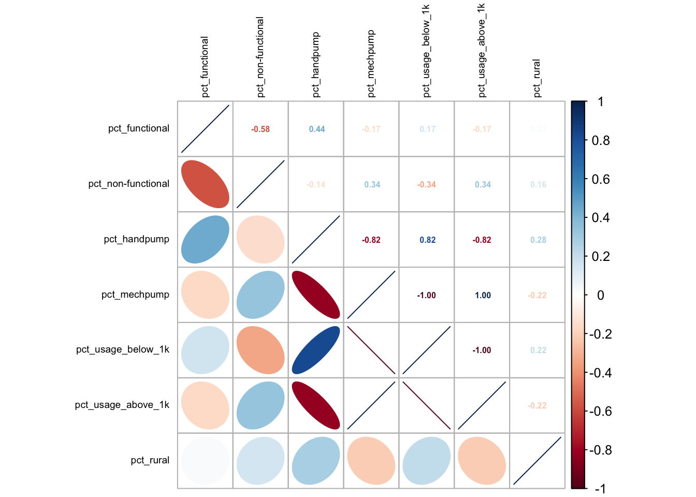
From the result above, we can identify 3 variables that are highly correlated. We will now choose to only retain 1 (pct_mechpump) for the analysis. We will create another dataframe to store all the variables required for the subsequent cluster analysis.
NIGERIA <- NIGERIA %>%
select(-`pct_usage_below_1k`, -`pct_usage_above_1k`)
nigeria_cluster_var <- NIGERIA %>%
st_drop_geometry()Hierarchy Cluster Analysis
In this section, you will learn how to perform hierarchical cluster analysis. The analysis consists of four major steps:
Extracting clustering variables
The code chunk below will be used to extract the clustering variables from the shan_sf simple feature object into data.frame.
cluster_vars <- nigeria_cluster_var %>%
select("ADM2_EN",
"pct_functional",
"pct_non-functional",
"pct_mechpump",
"pct_rural")
head(cluster_vars,10) ADM2_EN pct_functional pct_non-functional pct_mechpump pct_rural
1 Aba North 0.4117647 0.5294118 0.8235294 0.00000000
2 Aba South 0.4084507 0.4929577 0.8732394 0.05633803
4 Abaji 0.4035088 0.5964912 0.5964912 0.84210526
5 Abak 0.4791667 0.5208333 0.9166667 0.83333333
6 Abakaliki 0.3519313 0.1802575 0.0944206 0.87553648
7 Abeokuta North 0.4705882 0.4411765 0.7647059 0.20588235
8 Abeokuta South 0.6050420 0.2773109 0.7058824 0.00000000
9 Abi 0.5197368 0.4078947 0.3289474 0.95394737
10 Aboh-Mbaise 0.2727273 0.3939394 0.6515152 0.72727273
11 Abua/Odual 0.6410256 0.3333333 0.6666667 0.53846154Notice that the final clustering variables list does not include variable INTERNET_PR because it is highly correlated with variable COMPUTER_PR.
Next, we need to change the rows by township name instead of row number by using the code chunk below
row.names(cluster_vars) <- cluster_vars$ADM2_EN
head(cluster_vars,10) ADM2_EN pct_functional pct_non-functional pct_mechpump
Aba North Aba North 0.4117647 0.5294118 0.8235294
Aba South Aba South 0.4084507 0.4929577 0.8732394
Abaji Abaji 0.4035088 0.5964912 0.5964912
Abak Abak 0.4791667 0.5208333 0.9166667
Abakaliki Abakaliki 0.3519313 0.1802575 0.0944206
Abeokuta North Abeokuta North 0.4705882 0.4411765 0.7647059
Abeokuta South Abeokuta South 0.6050420 0.2773109 0.7058824
Abi Abi 0.5197368 0.4078947 0.3289474
Aboh-Mbaise Aboh-Mbaise 0.2727273 0.3939394 0.6515152
Abua/Odual Abua/Odual 0.6410256 0.3333333 0.6666667
pct_rural
Aba North 0.00000000
Aba South 0.05633803
Abaji 0.84210526
Abak 0.83333333
Abakaliki 0.87553648
Abeokuta North 0.20588235
Abeokuta South 0.00000000
Abi 0.95394737
Aboh-Mbaise 0.72727273
Abua/Odual 0.53846154Notice that the row number has been replaced into the area name.
Now, we will delete the ADM2_EN field by using the code chunk below.
cluster_vars <- select(cluster_vars, c(2:5))
head(cluster_vars, 10) pct_functional pct_non-functional pct_mechpump pct_rural
Aba North 0.4117647 0.5294118 0.8235294 0.00000000
Aba South 0.4084507 0.4929577 0.8732394 0.05633803
Abaji 0.4035088 0.5964912 0.5964912 0.84210526
Abak 0.4791667 0.5208333 0.9166667 0.83333333
Abakaliki 0.3519313 0.1802575 0.0944206 0.87553648
Abeokuta North 0.4705882 0.4411765 0.7647059 0.20588235
Abeokuta South 0.6050420 0.2773109 0.7058824 0.00000000
Abi 0.5197368 0.4078947 0.3289474 0.95394737
Aboh-Mbaise 0.2727273 0.3939394 0.6515152 0.72727273
Abua/Odual 0.6410256 0.3333333 0.6666667 0.53846154Data Standardisation
In general, multiple variables will be used in cluster analysis. It is not unusual their values range are different. In order to avoid the cluster analysis result is baised to clustering variables with large values, it is useful to standardise the input variables before performing cluster analysis.
Min-Max standardisation
In the code chunk below, normalize() of heatmaply package is used to stadardisation the clustering variables by using Min-Max method. The summary() is then used to display the summary statistics of the standardised clustering variables.
cluster_vars.std <- normalize(cluster_vars)
summary(cluster_vars.std) pct_functional pct_non-functional pct_mechpump pct_rural
Min. :0.0000 Min. :0.0000 Min. :0.0000 Min. :0.0000
1st Qu.:0.3333 1st Qu.:0.2211 1st Qu.:0.1250 1st Qu.:0.5922
Median :0.4792 Median :0.3559 Median :0.3193 Median :0.8717
Mean :0.5070 Mean :0.3654 Mean :0.3818 Mean :0.7395
3rd Qu.:0.6749 3rd Qu.:0.5082 3rd Qu.:0.5843 3rd Qu.:1.0000
Max. :1.0000 Max. :1.0000 Max. :1.0000 Max. :1.0000 Notice that the values range of the Min-max standardised clustering variables are 0-1 now.
Computing proximity matrix
In R, many packages provide functions to calculate distance matrix. We will compute the proximity matrix by using dist() of R.
dist() supports six distance proximity calculations, they are: euclidean, maximum, manhattan, canberra, binary and minkowski. The default is euclidean proximity matrix.
The code chunk below is used to compute the proximity matrix using euclidean method.
proxmat <- dist(cluster_vars, method = 'euclidean')Computing hierarchical clustering
In R, there are several packages provide hierarchical clustering function. In this hands-on exercise, hclust() of R stats will be used.
hclust() employed agglomeration method to compute the cluster. Eight clustering algorithms are supported, they are: ward.D, ward.D2, single, complete, average(UPGMA), mcquitty(WPGMA), median(WPGMC) and centroid(UPGMC).
The code chunk below performs hierarchical cluster analysis using ward.D method. The hierarchical clustering output is stored in an object of class hclust which describes the tree produced by the clustering process.
hclust_ward <- hclust(proxmat, method = 'ward.D')We can then plot the tree by using plot() of R Graphics as shown in the code chunk below.
plot(hclust_ward, cex = 0.2)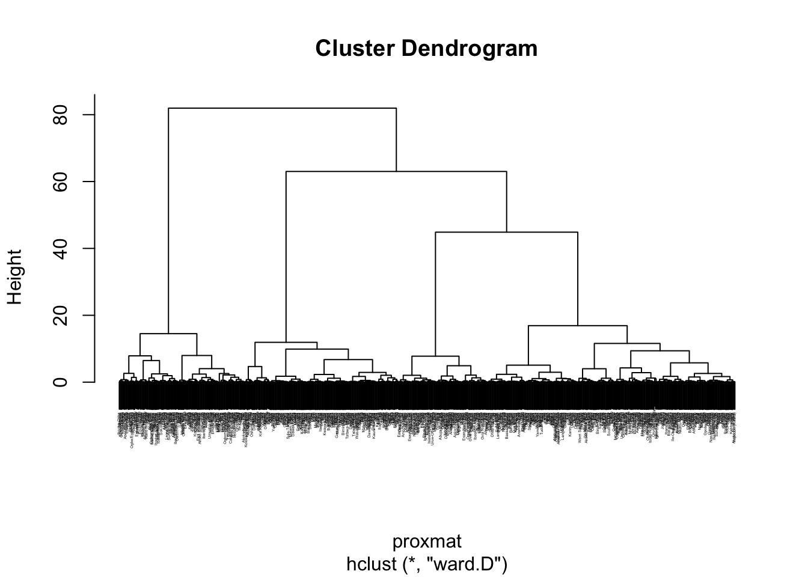
Selecting the optimal clustering algorithm
One of the challenge in performing hierarchical clustering is to identify stronger clustering structures. The issue can be solved by using use agnes() function of cluster package. It functions like hclus(), however, with the agnes() function you can also get the agglomerative coefficient, which measures the amount of clustering structure found (values closer to 1 suggest strong clustering structure).
The code chunk below will be used to compute the agglomerative coefficients of all hierarchical clustering algorithms.
m <- c( "average", "single", "complete", "ward")
names(m) <- c( "average", "single", "complete", "ward")
ac <- function(x) {
agnes(cluster_vars, method = x)$ac
}
map_dbl(m, ac) average single complete ward
0.9359093 0.8736009 0.9565071 0.9919311 With reference to the output above, we can see that Ward’s method provides the strongest clustering structure among the four methods assessed. Hence, in the subsequent analysis, only Ward’s method will be used.
Determining Optimal Clusters
Another technical challenge face by data analyst in performing clustering analysis is to determine the optimal clusters to retain.
There are three commonly used methods to determine the optimal clusters, they are:
Gap Statistic Method
The gap statistic compares the total within intra-cluster variation for different values of k with their expected values under null reference distribution of the data. The estimate of the optimal clusters will be value that maximize the gap statistic (i.e., that yields the largest gap statistic). This means that the clustering structure is far away from the random uniform distribution of points.
To compute the gap statistic, clusGap() of cluster package will be used.
set.seed(1234)
gap_stat <- clusGap(cluster_vars,
FUN = hcut,
nstart = 25,
K.max = 10,
B = 50)
# Print the result
print(gap_stat, method = "firstmax")Clustering Gap statistic ["clusGap"] from call:
clusGap(x = cluster_vars, FUNcluster = hcut, K.max = 10, B = 50, nstart = 25)
B=50 simulated reference sets, k = 1..10; spaceH0="scaledPCA"
--> Number of clusters (method 'firstmax'): 4
logW E.logW gap SE.sim
[1,] 4.872463 5.448119 0.5756563 0.009736660
[2,] 4.711703 5.321723 0.6100198 0.012621365
[3,] 4.562377 5.228265 0.6658876 0.011595704
[4,] 4.446871 5.151635 0.7047639 0.010260223
[5,] 4.387852 5.087178 0.6993254 0.009082077
[6,] 4.344868 5.032934 0.6880656 0.010439600
[7,] 4.296815 4.986356 0.6895412 0.010984687
[8,] 4.254341 4.946371 0.6920298 0.011749256
[9,] 4.213275 4.914437 0.7011621 0.010937725
[10,] 4.165939 4.885971 0.7200326 0.010853946Also note that the hcut function used is from factoextra package.
Next, we can visualise the plot by using fviz_gap_stat() of factoextra package.
fviz_gap_stat(gap_stat)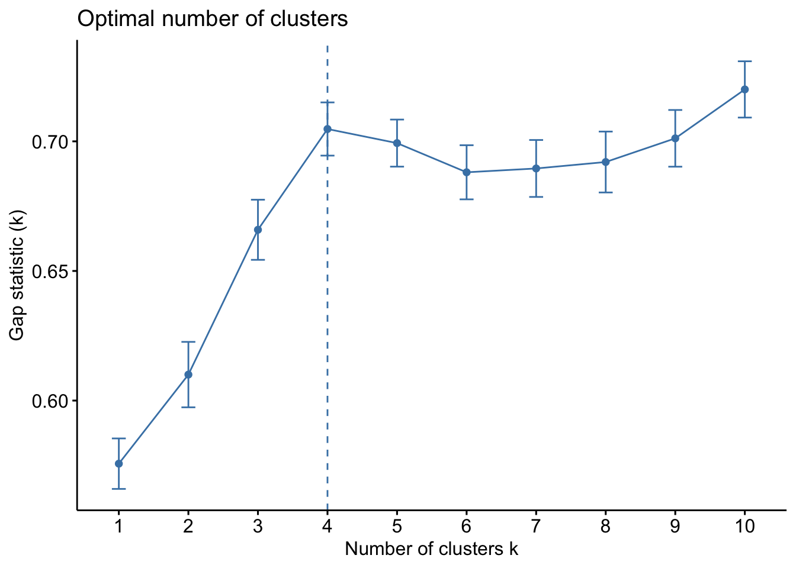
With reference to the gap statistic graph above, the recommended number of cluster to retain is 4. However, it is not logical to retain only one cluster. By examine the gap statistic graph, the 10-cluster gives the largest gap statistic and should be the next best cluster to pick.
Interpreting the dendrograms
In the dendrogram displayed above, each leaf corresponds to one observation. As we move up the tree, observations that are similar to each other are combined into branches, which are themselves fused at a higher height.
The height of the fusion, provided on the vertical axis, indicates the (dis)similarity between two observations. The higher the height of the fusion, the less similar the observations are. Note that, conclusions about the proximity of two observations can be drawn only based on the height where branches containing those two observations first are fused. We cannot use the proximity of two observations along the horizontal axis as a criteria of their similarity.
It’s also possible to draw the dendrogram with a border around the selected clusters by using rect.hclust() of R stats. The argument border is used to specify the border colors for the rectangles.
plot(hclust_ward, cex = 0.2)
rect.hclust(hclust_ward,
k = 4,
border = 2:5)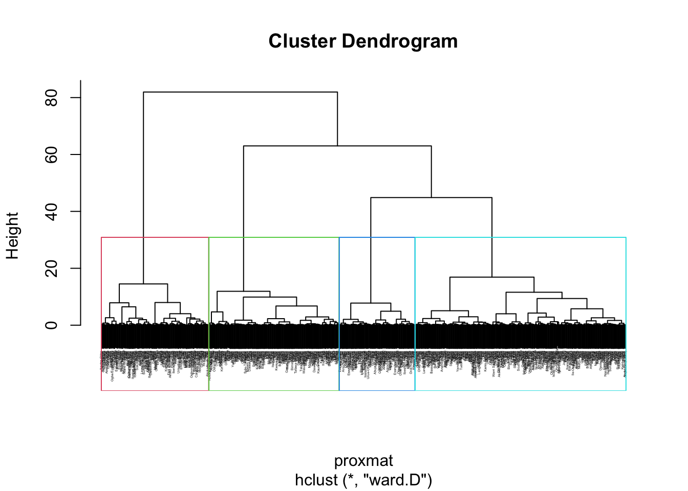
Mapping the clusters formed
cutree() of R Base will be used in the code chunk below to derive a 6-cluster model.
groups <- as.factor(cutree(hclust_ward, k=4))The output is called groups. It is a list object.
In order to visualise the clusters, the groups object need to be appended onto shan_sf simple feature object.
The code chunk below form the join in three steps:
the groups list object will be converted into a matrix;
cbind() is used to append groups matrix onto shan_sf to produce an output simple feature object called
shan_sf_cluster; andrename of dplyr package is used to rename as.matrix.groups field as CLUSTER.
nigeria_cluster <- cbind(NIGERIA, as.matrix(groups)) %>%
rename(`CLUSTER`=`as.matrix.groups.`)Next, qtm() of tmap package is used to plot the choropleth map showing the cluster formed.
qtm(nigeria_cluster, "CLUSTER")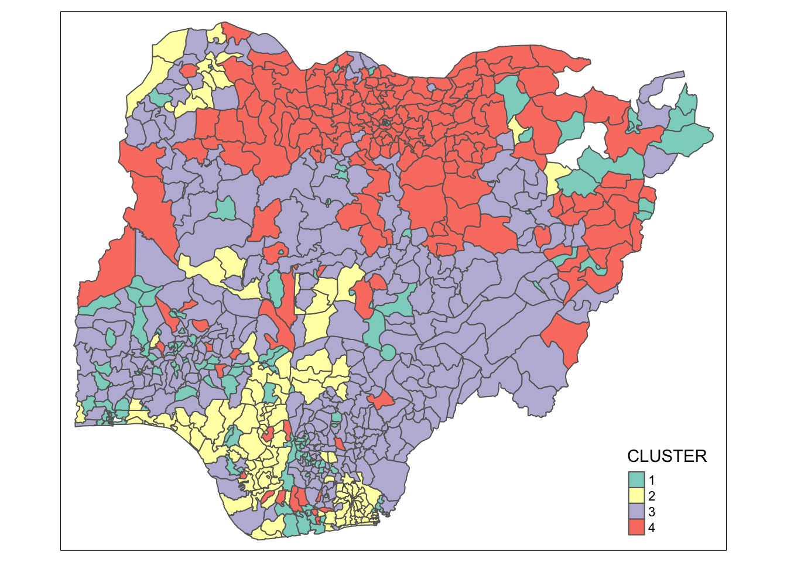
The choropleth map above reveals the clusters are very fragmented. The is one of the major limitation when non-spatial clustering algorithm such as hierarchical cluster analysis method is used.
Spatially Constrained Clustering: SKATER approach
Converting into SpatialPolygonsDataFrame
First, we need to convert NIGERIA into SpatialPolygonsDataFrame. This is because SKATER function only support sp objects such as SpatialPolygonDataFrame.
The code chunk below uses as_Spatial() of sf package to convert NIGERIA into a SpatialPolygonDataFrame called nga_sp.
nga_sp <- as_Spatial(NIGERIA)Computing Neighbour List
Next, poly2nd() of spdep package will be used to compute the neighbours list from polygon list.
nga.nb <- poly2nb(nga_sp)
summary(nga.nb)Neighbour list object:
Number of regions: 761
Number of nonzero links: 4348
Percentage nonzero weights: 0.750793
Average number of links: 5.713535
Link number distribution:
1 2 3 4 5 6 7 8 9 10 11 12 14
4 16 57 122 177 137 121 71 39 11 4 1 1
4 least connected regions:
138 509 525 560 with 1 link
1 most connected region:
508 with 14 linksWe can plot the neighbours list on nga_sp by using the code chunk below. Since we now can plot the community area boundaries as well, we plot this graph on top of the map. The first plot command gives the boundaries. This is followed by the plot of the neighbor list object, with coordinates applied to the original SpatialPolygonDataFrame (Shan state township boundaries) to extract the centroids of the polygons. These are used as the nodes for the graph representation. We also set the color to blue and specify add=TRUE to plot the network on top of the boundaries.
plot(nga_sp,
border=grey(.2))
plot(nga.nb,
coordinates(nga_sp),
col="blue",
add=TRUE)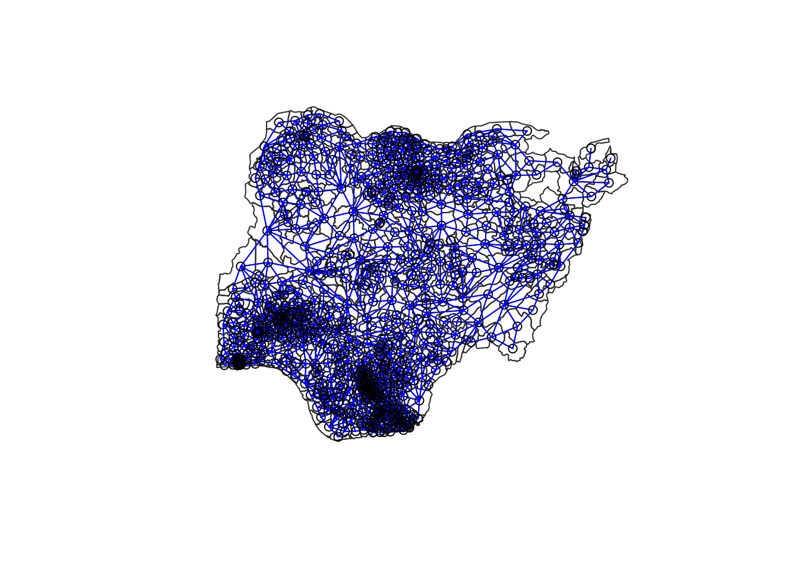
Computing minimum spanning tree
Calculating edge costs
Next, nbcosts() of spdep package is used to compute the cost of each edge. It is the distance between it nodes. This function compute this distance using a data.frame with observations vector in each node.
The code chunk below is used to compute the cost of each edge.
lcosts <- nbcosts(nga.nb, cluster_vars)For each observation, this gives the pairwise dissimilarity between its values on the five variables and the values for the neighbouring observation (from the neighbour list). Basically, this is the notion of a generalised weight for a spatial weights matrix.
Next, We will incorporate these costs into a weights object in the same way as we did in the calculation of inverse of distance weights. In other words, we convert the neighbour list to a list weights object by specifying the just computed lcosts as the weights.
In order to achieve this, nb2listw() of spdep package is used as shown in the code chunk below.
Note that we specify the style as B to make sure the cost values are not row-standardised.
nga.w <- nb2listw(nga.nb,
lcosts,
style="B")
summary(nga.w)Characteristics of weights list object:
Neighbour list object:
Number of regions: 761
Number of nonzero links: 4348
Percentage nonzero weights: 0.750793
Average number of links: 5.713535
Link number distribution:
1 2 3 4 5 6 7 8 9 10 11 12 14
4 16 57 122 177 137 121 71 39 11 4 1 1
4 least connected regions:
138 509 525 560 with 1 link
1 most connected region:
508 with 14 links
Weights style: B
Weights constants summary:
n nn S0 S1 S2
B 761 579121 1880.531 2236.133 23195.53Computing minimum spanning tree
The minimum spanning tree is computed by mean of the mstree() of spdep package as shown in the code chunk below.
nga.mst <- mstree(nga.w)After computing the MST, we can check its class and dimension by using the code chunk below.
class(nga.mst)[1] "mst" "matrix"dim(nga.mst)[1] 760 3head(nga.mst) [,1] [,2] [,3]
[1,] 415 381 0.1615643
[2,] 381 374 0.1214571
[3,] 374 394 0.1382310
[4,] 381 655 0.1578371
[5,] 655 430 0.2748764
[6,] 430 509 0.1992674The plot method for the MST include a way to show the observation numbers of the nodes in addition to the edge. As before, we plot this together with the township boundaries. We can see how the initial neighbour list is simplified to just one edge connecting each of the nodes, while passing through all the nodes.
plot(nga_sp, border=gray(.5))
plot.mst(nga.mst,
coordinates(nga_sp),
col="blue",
cex.lab=0.2,
cex.circles=0.005,
add=TRUE)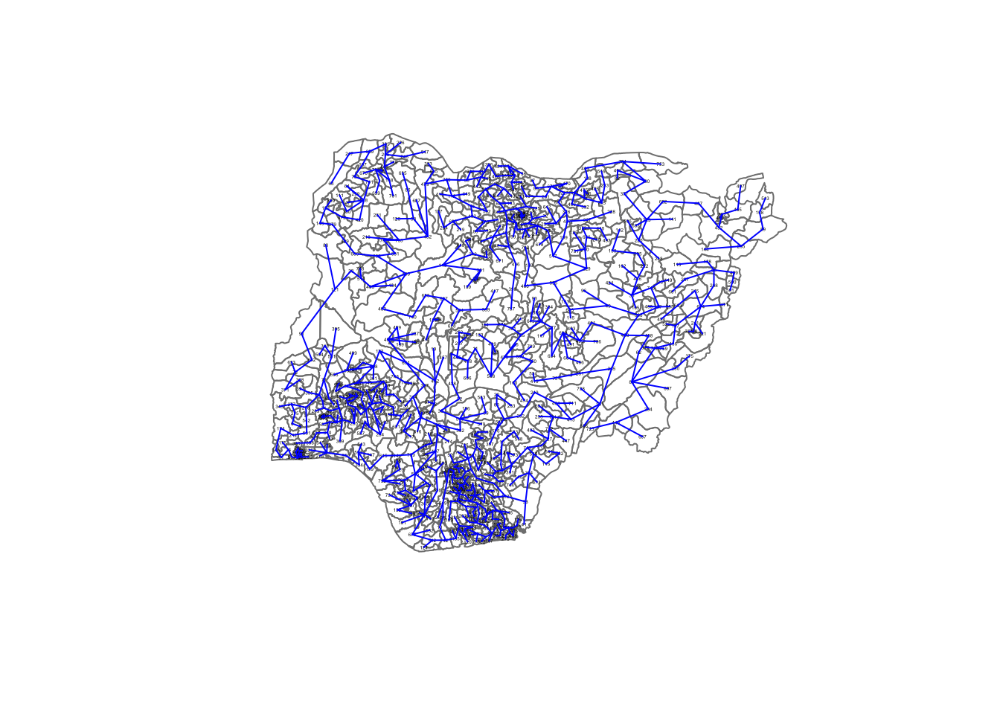
Computing spatially constrained clusters using SKATER method
The code chunk below compute the spatially constrained cluster using skater() of spdep package.
clust6 <- spdep::skater(edges = nga.mst[,1:2],
data = cluster_vars,
method = "euclidean",
ncuts = 5)The skater() takes three mandatory arguments: - the first two columns of the MST matrix (i.e. not the cost), - the data matrix (to update the costs as units are being grouped), and - the number of cuts.
The result of the skater() is an object of class skater. We can examine its contents by using the code chunk below.
str(clust6)List of 8
$ groups : num [1:761] 1 1 1 3 1 1 1 1 1 4 ...
$ edges.groups:List of 6
..$ :List of 3
.. ..$ node: num [1:360] 81 346 174 212 537 69 118 597 531 544 ...
.. ..$ edge: num [1:359, 1:3] 33 324 566 556 655 745 537 655 605 118 ...
.. ..$ ssw : num 154
..$ :List of 3
.. ..$ node: num [1:189] 761 735 482 112 479 145 760 463 130 108 ...
.. ..$ edge: num [1:188, 1:3] 463 130 108 377 754 414 467 432 439 718 ...
.. ..$ ssw : num 68.5
..$ :List of 3
.. ..$ node: num [1:45] 359 538 201 325 282 369 720 525 535 712 ...
.. ..$ edge: num [1:44, 1:3] 574 600 135 712 327 359 574 422 538 359 ...
.. ..$ ssw : num 12.8
..$ :List of 3
.. ..$ node: num [1:76] 208 197 595 511 512 364 675 365 650 709 ...
.. ..$ edge: num [1:75, 1:3] 512 675 42 650 155 188 624 536 365 364 ...
.. ..$ ssw : num 35.2
..$ :List of 3
.. ..$ node: num [1:18] 14 567 50 610 680 453 48 669 31 452 ...
.. ..$ edge: num [1:17, 1:3] 50 31 567 50 14 610 14 680 48 610 ...
.. ..$ ssw : num 6.07
..$ :List of 3
.. ..$ node: num [1:73] 651 639 660 429 679 146 129 472 420 688 ...
.. ..$ edge: num [1:72, 1:3] 679 146 429 660 129 639 472 420 639 73 ...
.. ..$ ssw : num 28.7
$ not.prune : NULL
$ candidates : int [1:6] 1 2 3 4 5 6
$ ssto : num 375
$ ssw : num [1:6] 375 347 335 323 313 ...
$ crit : num [1:2] 1 Inf
$ vec.crit : num [1:761] 1 1 1 1 1 1 1 1 1 1 ...
- attr(*, "class")= chr "skater"We can check the cluster assignment by using the conde chunk below.
ccs6 <- clust6$groups
table(ccs6)ccs6
1 2 3 4 5 6
360 189 45 76 18 73 Lastly, we can also plot the pruned tree that shows the five clusters on top of the townshop area.
plot(nga_sp, border=gray(.5))
plot(clust6,
coordinates(nga_sp),
cex.lab=.2,
groups.colors=c("red","green","blue", "brown", "pink"),
cex.circles=0.005,
add=TRUE)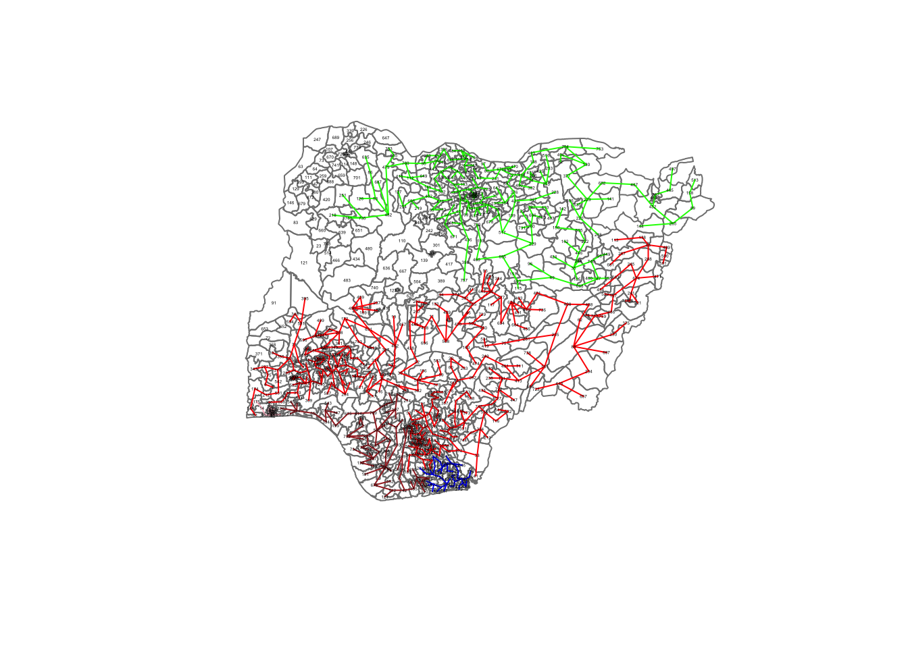
Visualising the clusters in choropleth map
The code chunk below is used to plot the newly derived clusters by using SKATER method.
groups_mat <- as.matrix(clust6$groups)
nigeria_spatialcluster <- cbind(nigeria_cluster, as.factor(groups_mat)) %>%
rename(`SP_CLUSTER`=`as.factor.groups_mat.`)
qtm(nigeria_spatialcluster, "SP_CLUSTER")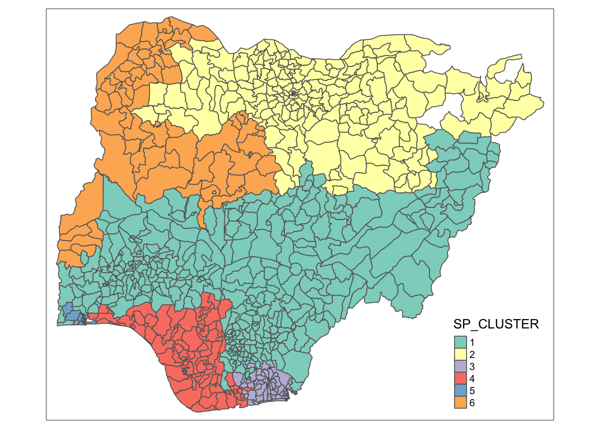
For easy comparison, it will be better to place both the hierarchical clustering and spatially constrained hierarchical clustering maps next to each other.
hclust.map <- qtm(nigeria_cluster,
"CLUSTER") +
tm_borders(alpha = 0.5)
shclust.map <- qtm(nigeria_spatialcluster,
"SP_CLUSTER") +
tm_borders(alpha = 0.5)
tmap_arrange(hclust.map, shclust.map,
asp=NA, ncol=2)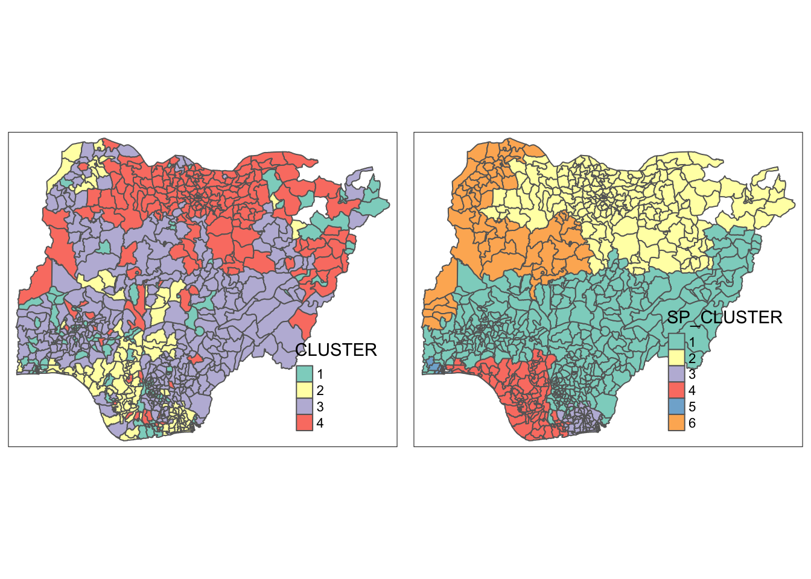
We can see that the SP cluster is much more gathered together, displaying a rather evenly separated situation, while the hierarchy cluster is much more scattered around the map. In conclusion, the characteristics of the two are totally different, but it is hard to determine which is better.
Spatially Constrained Hierarchical Clustering
Before we can performed spatially constrained hierarchical clustering, a spatial distance matrix will be derived by using st_distance() of sf package.
dist <- st_distance(NIGERIA, NIGERIA)
distmat <- as.dist(dist)Notice that as.dist() is used to convert the data frame into matrix.
Next, choicealpha() will be used to determine a suitable value for the mixing parameter alpha as shown in the code chunk below.
cr <- choicealpha(proxmat, distmat, range.alpha = seq(0, 1, 0.1), K=4, graph = TRUE)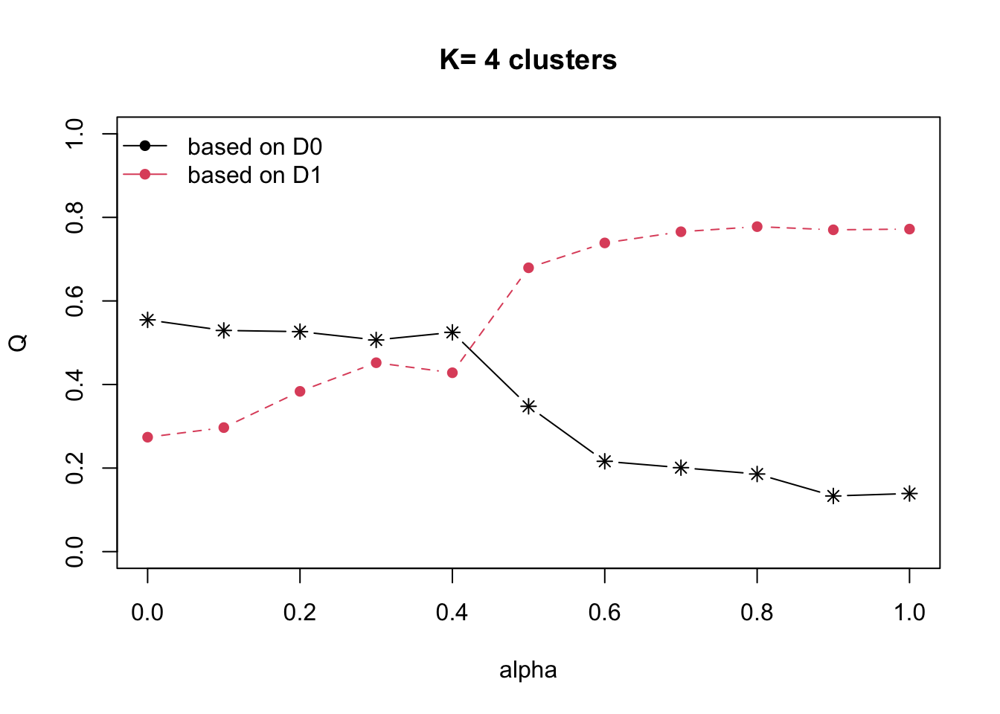
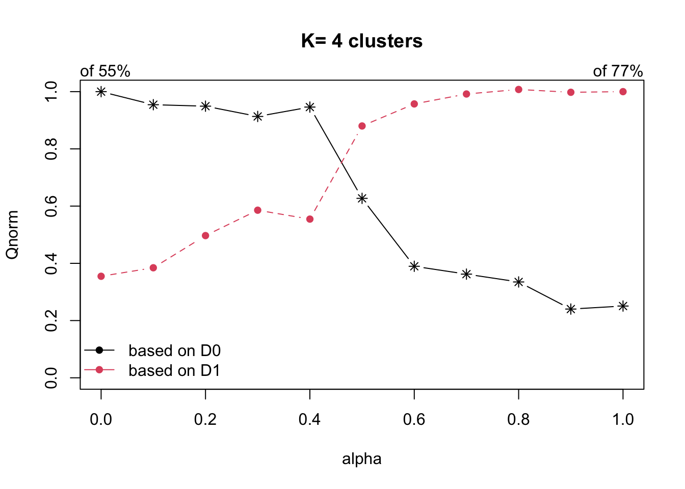
With reference to the graphs above, alpha = 0.3 will be used as shown in the code chunk below.
clustG <- hclustgeo(proxmat, distmat, alpha = 0.3)Next, cutree() is used to derive the cluster object.
groups <- as.factor(cutree(clustG, k=4))We will then join back the group list with NIGERIA polygon feature data frame by using the code chunk below.
nigeria_Gcluster <- cbind(NIGERIA, as.matrix(groups)) %>%
rename(`CLUSTER` = `as.matrix.groups.`)We can now plot the map of the newly delineated spatially constrained clusters.
Gcluster.map <- qtm(nigeria_Gcluster, "CLUSTER")
Gcluster.map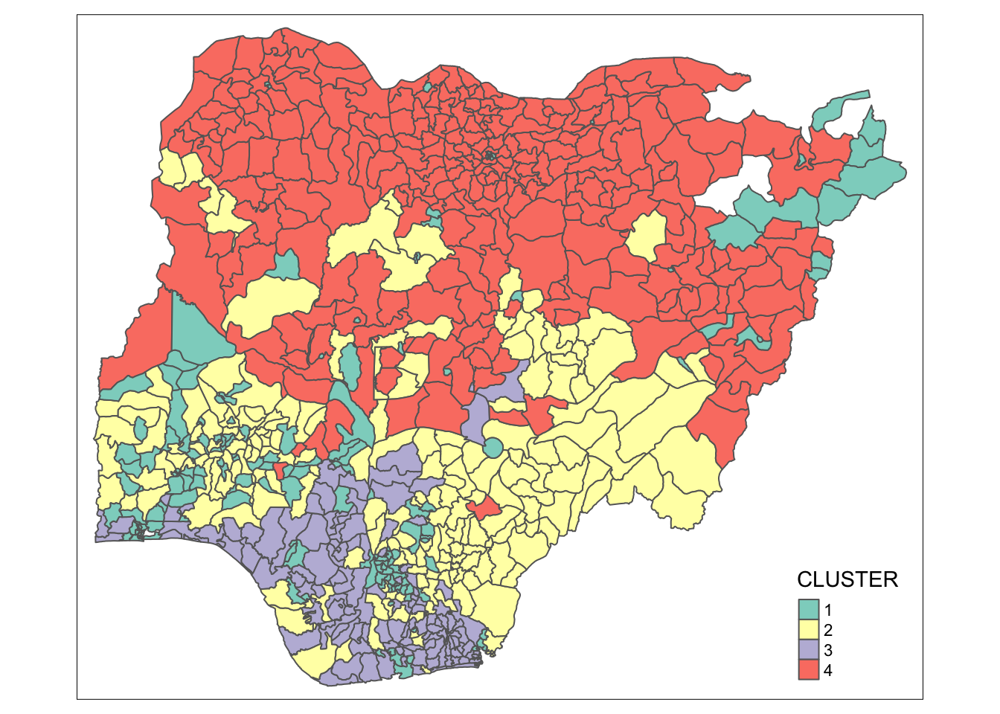
Visualization of Clusters
Visualizing individual clustering map
tmap_arrange(hclust.map, shclust.map, Gcluster.map, ncol = 3, asp = 1)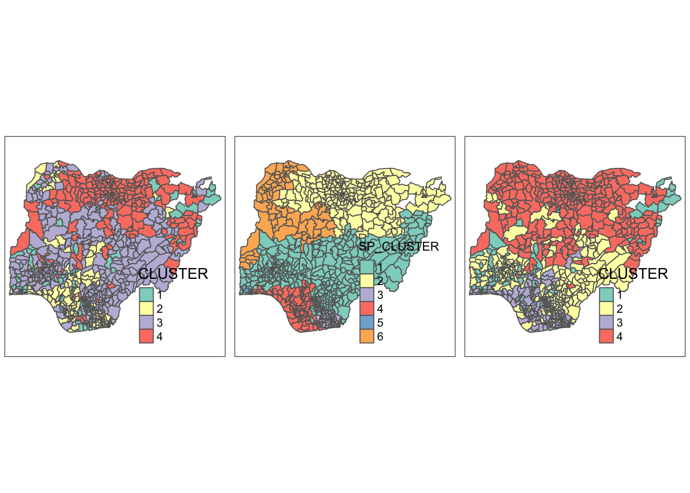
Conclusion
From the analysis conducted above, we can visualize the differences in each clustering methods. The limitation of hierarchy cluster is that the regions are scattered all around the map, making it very difficult to determine the exact areas or regions of a specific type. The SKATER approach, however, shows a much clear division between regions. At the end of the day, the lack of determination of accuracy is causing this issue of choosing the right cluster method, one might say the spatially constrained clustering is better with a more detailed division between regions, others might say the original hierarchy is the best with the concentrated areas displayed. At last, there still needs a more detailed and specific accuracy analysis on the different clustering methods conducted, while the current three has shown different aspect of their own interpretation of the right map.